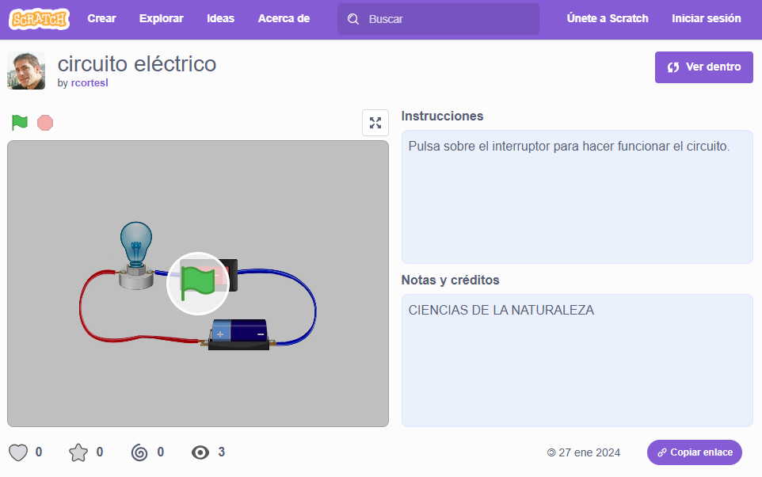
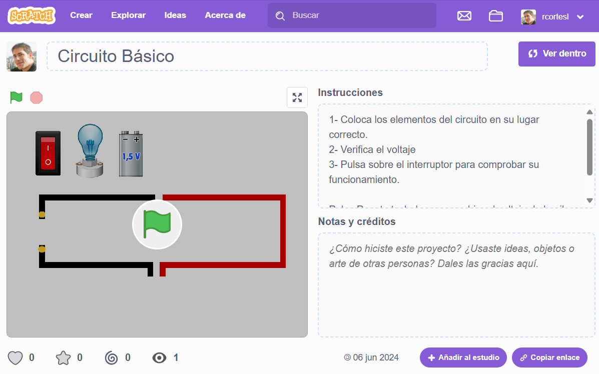
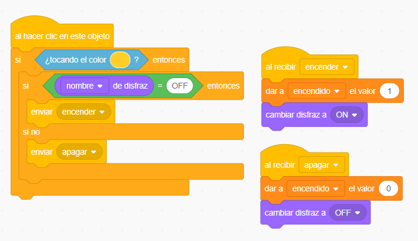
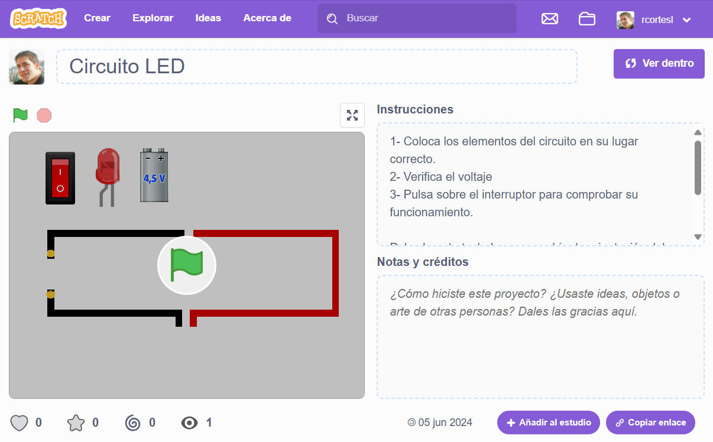
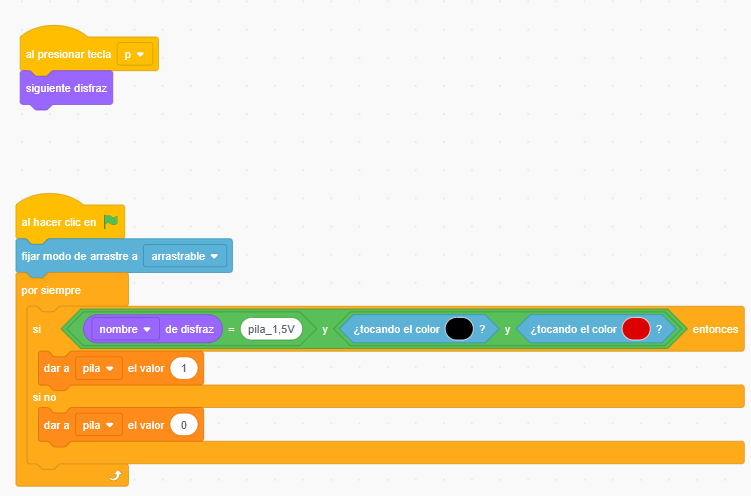
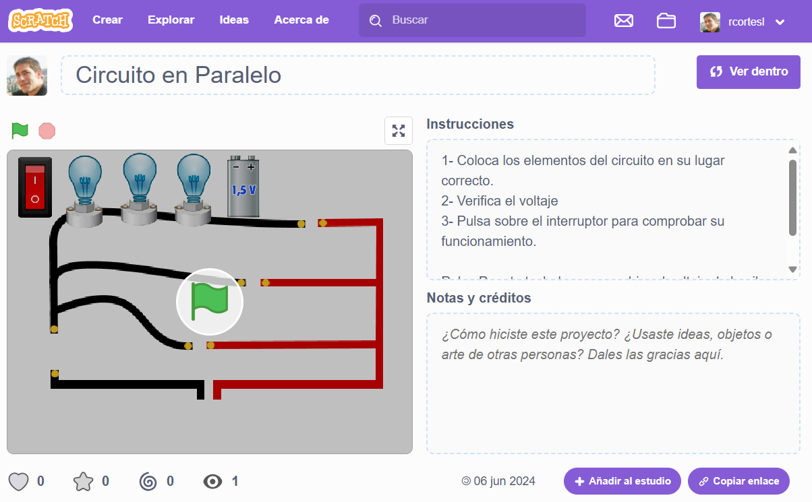
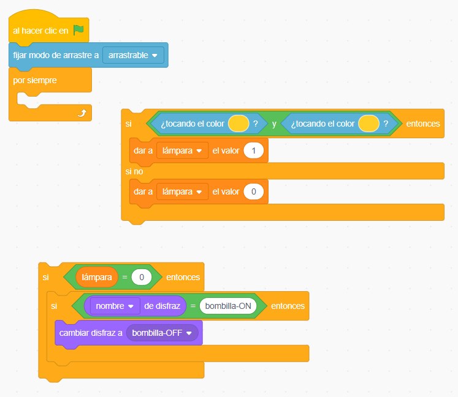
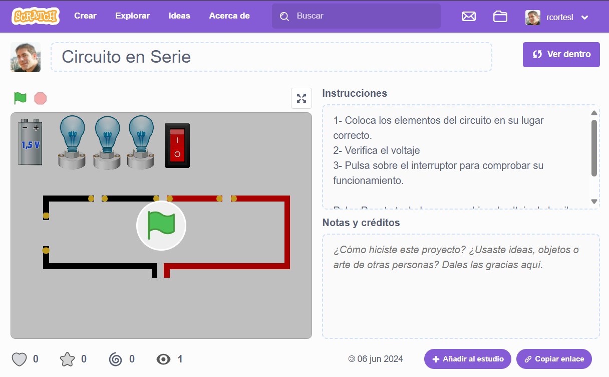
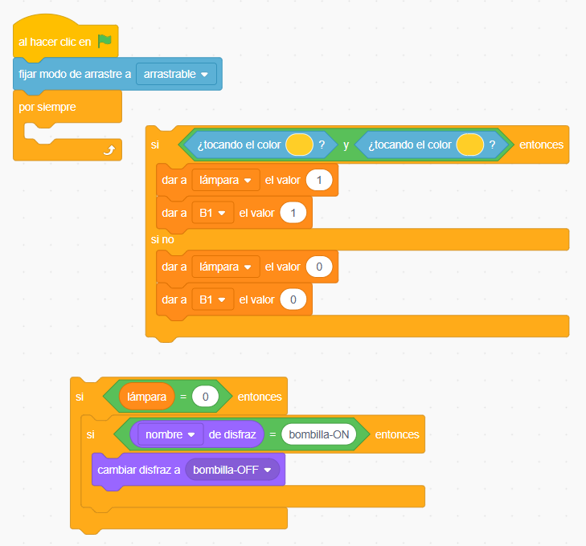
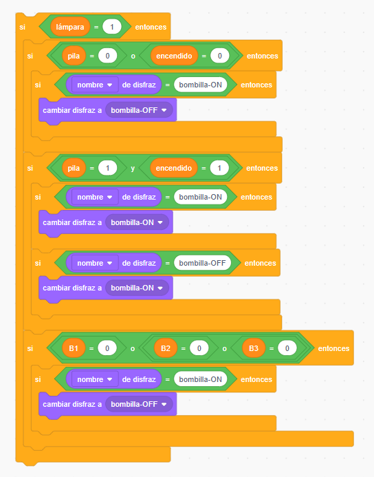

Desarrollo de las sesiones
Materiales para leer o ver en casa.
¿Qué tenemos que hacer y cómo?
Empezamos la clase (10 minutos)
1.- Hacemos un repaso de los contenidos que habéis revisado en casa. Os voy a hacer algunas preguntas para activar vuestros conocimientos previos y asegurarme de que todos lo habéis comprendido.
2.- Después vamos trabajar de forma individual con el programa Scratch. Tienes un ejemplo de la tarea en circuito eléctrico on Scratch (mit.edu)

Primera Actividad (40 minutos)
Tu tarea consiste en colocar los elementos del circuito de forma correcta (posición y disfraz) y crear el código de programación para que funcione el interruptor y se enciendan las bombillas.
Para el código puedes consultar la guía de programación (en ficheros adjuntos).
- Hay 4 actividades, de más fácil a más difícil. Realízalas en orden desde la web de scratch.mit.edu
- Guarda el archivo SB3 en tu OneDrive y compártelo con el profesor para su corrección.
- Los que no termines en clase los puedes terminar en casa.
nivel 1 - Enciende la bombilla con la pila correcta.
Ver funcionamiento: https://scratch.mit.edu/projects/1032921789/

Tarea de programación: Debes completar el funcionamiento del interruptor [ condicional / variables / enviar-recibir ]

nivel 2 - Enciende el LED
Ver funcionamiento: https://scratch.mit.edu/projects/1032641464/

Tarea de programación: Debes completar el funcionamiento de la pila [ operadores, condicionales, sensores ]

nivel 3 - Enciende 3 bombillas en paralelo.
Ver funcionamiento: https://scratch.mit.edu/projects/1033383856/

Tarea de programación: Debes completar el funcionamiento de la bombilla (para cada una de las tres) [ operadores, condicionales, variables ]

nivel 4 - Enciende 3 bombillas en serie.
Ver funcionamiento: https://scratch.mit.edu/projects/1033330897/

Tarea de programación: Debes completar el funcionamiento de la bombilla (para cada una de las tres) [ operadores, condicionales, variables ]


Segunda Actividad (10 minutos)
Completa el informe y guarda el archivo de Word en tu OneDrive dando permiso a tu profesor para su corrección.